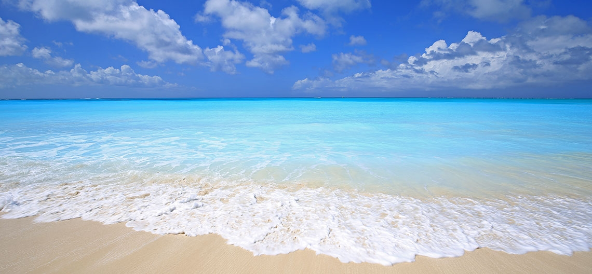
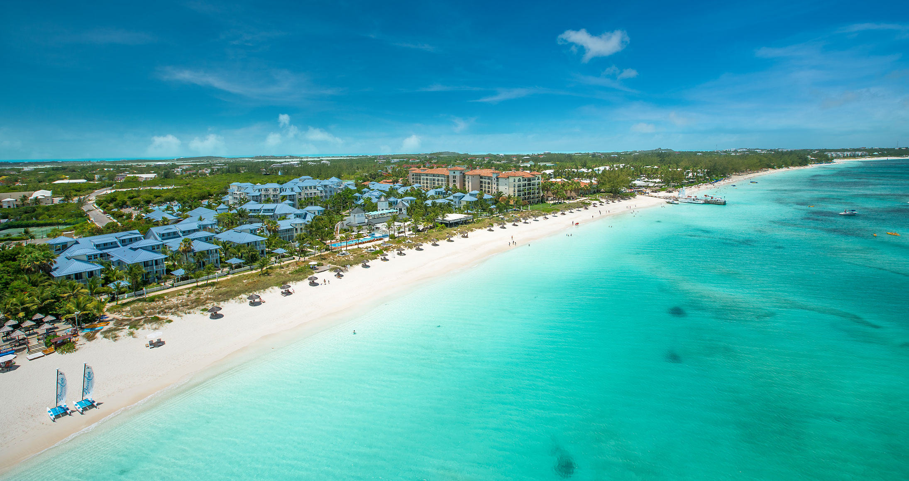
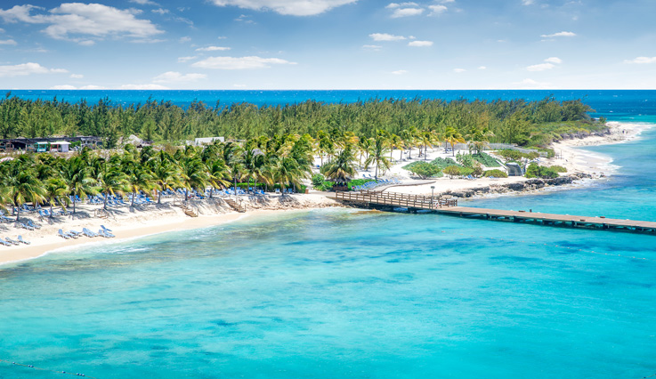
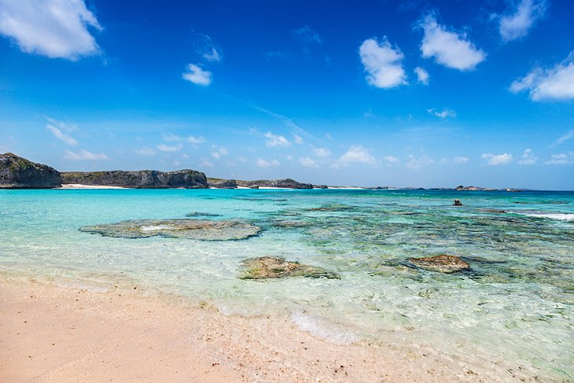
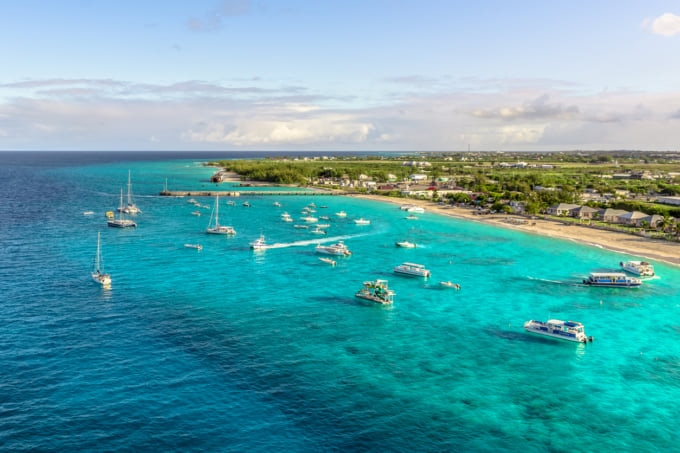
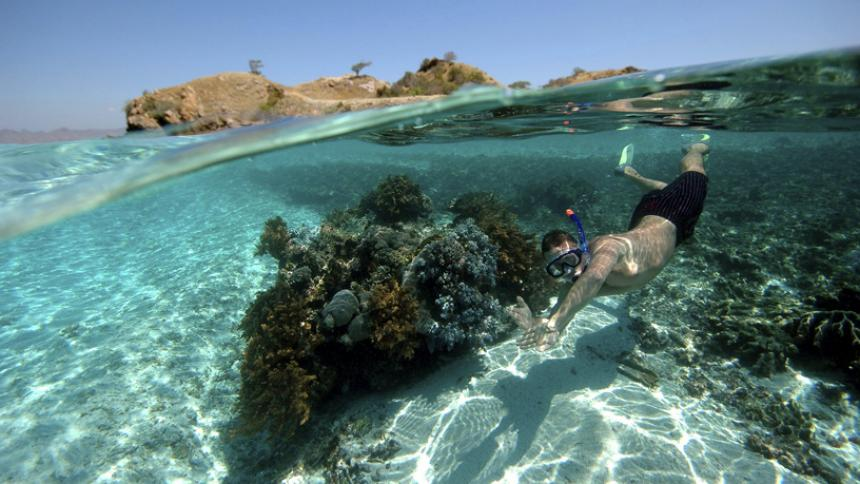

Turks And Caicos Islands,
one of the most beautiful place to visit in the world.
Before start it, let's take a look photos taken there below to refresh ourselves







Look at this Western Carribean map.
There are some places such as Florida, Cuba, and Dominican Rep. which you are familiar with
You can see a orange dot where Turks and Caicos Islands is on the map.
Please CLICK the next button to see a bigger map.
There are some places such as Florida, Cuba, and Dominican Rep. which you are familiar with
You can see a orange dot where Turks and Caicos Islands is on the map.
Please CLICK the next button to see a bigger map.
Turks and Caicos Islands are consist of 40 low-lying coral islands.
And those are full of beautiful beaches and natural parks and reserves including giant reef.
Please find five signs on the map and CLICK to see the view.
Providenciales International Airport (IATA: PLS, ICAO: MBPV) which is the only international airport in Turks and Caicos is located in the island of Providenciales.
You can get to the airport with direct flights from Toronto, Montreal, New York(Newwark, JFK), Atlanta, Charlotte, Miami, and some seasonal flights from Chicago and Boston, etc by taking these airlines below.
You can get to the airport with direct flights from Toronto, Montreal, New York(Newwark, JFK), Atlanta, Charlotte, Miami, and some seasonal flights from Chicago and Boston, etc by taking these airlines below.
Toronto
Montreal
New York
Atlanta
Miami
Charlotte
Turks and Caicos
Let us take a look this map. As this islands are knows as one of the best honeymoon destination, these are full of luxurious villas and resorts. CLICK the button to see where hotels and villas are located.
CLICK